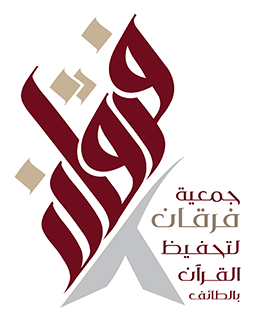

منظومة مشرفات مكتب إشراف الداخل
جمعية فرقان لتحفيظ القرآن الكريم
مشرفات وحدة الإشراف التربوي
مشرفات وحدة تحفيظ الصغار
مشرفات وحدة الإشراف الإداري
المعلمات
إدارة المراكز
الأدوات الإلكترونية
إدارة الوحدات
دليل المنظومة وملاحظات التجربة